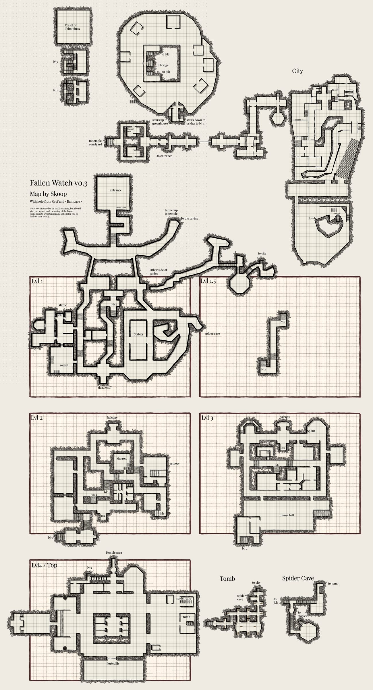
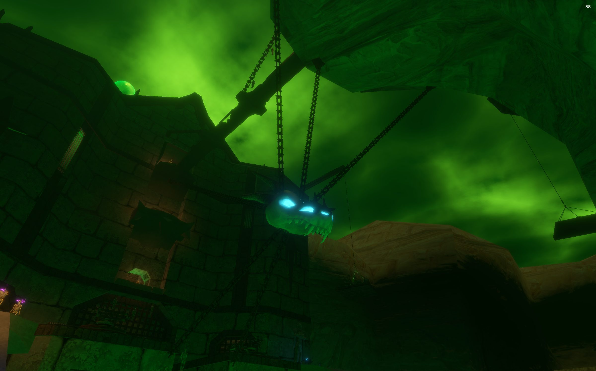

Fallen Watch
Little is known of Fallen Watch at this time.
Map


Named mobs
Mobs & NPCs (camps by level)
Rows with a level are huntable camps; rows without are usually town NPCs or not yet documented.
| Name | Lvl | Race | Class | Where | Notes |
|---|---|---|---|---|---|
| a bloated plague rat wiki | 40 | Rat | - | In among the Sri'Var ratkin, near the top of the zone. | Plague Rat Whisker |
| a cursed plague rat wiki | 45-60 | Rat | - | - | |
| a zombified rat wiki | 45-60 | Rat | - | - | |
| a fleshless seer wiki | ~50-54 | Skeleton | Shaman | - | Page 1 Scrap, Page 2 Scrap, Page 3 Scrap, Page 4 Scrap, Page 5 Scrap, Page 6 Scrap, Page 7 Scrap, Page 8 Scrap, Page 9 Scrap |
| a ratman ritualist wiki | ~50-54 | Ratkin | Neromancer | - | |
| an infected prelate wiki | ~50-54 | Skeleton | Cleric | - | Page 1 Scrap, Page 2 Scrap, Page 3 Scrap, Page 4 Scrap, Page 5 Scrap, Page 6 Scrap, Page 7 Scrap, Page 8 Scrap, Page 9 Scrap |
| a Plagueborn Corpse wiki | 60 | Zombie | - | - | |
| a knight watchman wiki | 60 | Skeleton | - | - | |
| a ratman rogue wiki | 60 | Ratkin | - | - | |
| A callous gravedigger wiki | |||||
| A caustic ooze wiki | |||||
| A crippled plague rat wiki | |||||
| A festering skirmisher wiki | |||||
| A gaunt bowman wiki | |||||
| A heartless hunter wiki | |||||
| A lingering spirit wiki | |||||
| A merciless marauder wiki | |||||
| A moldering plague rat wiki | |||||
| A mouldering knight wiki | |||||
| A notch-eared shaftsman wiki | |||||
| A plague-sworn squire wiki | |||||
| A plaguesworn knight wiki | |||||
| A pustuled acolyte wiki | |||||
| A pustuled gravechanter wiki | |||||
| A putrid puddle wiki | |||||
| A ravenous ghoul wiki | |||||
| A risen cleric wiki | |||||
| A rotting blightblade wiki | |||||
| A rotting deacon wiki | |||||
| A scrupulous constable wiki | |||||
| A shrewd shanker wiki | |||||
| A soiled mucker wiki | |||||
| A tawny hayward wiki | |||||
| A tearful mourner wiki | |||||
| A tormented soul wiki | |||||
| A whispering groom wiki | |||||
| A withered warlock wiki | |||||
| Aldric Vellander wiki | |||||
| An expert mason wiki | |||||
| An inert oozeling wiki | |||||
| An oozeling wiki | |||||
| Herald Hawkins wiki | |||||
| Morgan the Skewer wiki | |||||
| Plagueborn Paulston wiki | |||||
| Templeton wiki | |||||
| Tormented Soul wiki | - | Zombie | - | Can randomly spawn from killing the rats. Cursed rats have a high chance to spawn the tormented soul. | |
| Truthseeker Rongrim wiki | |||||
| a Plagueborn archer wiki | - | Skeleton | Archer | - | |
| a Plagueborn cleric wiki | - | Skeleton | Cleric | - | |
| a Plagueborn mage | - | Skeleton | Wizard | - | |
| a Plagueborn warrior wiki | - | Skeleton | Fighter | - | |
| a armored revenant | - | Skeleton | - | - | |
| a barrow knight wiki | - | Skeleton | - | - | Page 9 Scrap, Page 7 Scrap, Page 4 Scrap |
| a blistered ambusher wiki | - | Ratkin | - | - | Page 1 Scrap, Page 2 Scrap, Page 3 Scrap, Page 4 Scrap, Page 5 Scrap, Page 6 Scrap, Page 7 Scrap, Page 8 Scrap, Page 9 Scrap, Page 10 Scrap, Journal Page 24 Scrap 2/5, Journal Page 26 Scrap 1/5 |
| a bone archer wiki | - | Skeleton | Archer | - | |
| a churning ooze | - | Ooze | - | - | |
| a comely courtesan | - | Ghost | - | - | |
| a congealed scavenger | - | Slime | - | - | |
| a contagious bleeder wiki | - | Ratkin | - | - | |
| a corrosive devourer | - | Slime | - | - | |
| a cryptic weaver wiki | - | Skeleton | - | - | |
| a death charger | - | Horse | - | - | Stables |
| a diseased cap wiki | - | Myconid | - | - | |
| a diseased mystic wiki | - | Skeleton | - | - | |
| a dreary wanderer wiki | - | Ghost | - | - | |
| a favored attendant wiki | - | Ghost | - | - | |
| a feeble ratmancer wiki | - | Ratkin | - | - | |
| a forlorn dreamer wiki | - | Ghost | - | - | |
| a frenzied Plagueborn wiki | - | Ghoul | - | - | |
| a gargantuan ghoul wiki | - | Ghoul | - | - | |
| a gifted prodigy | - | Ghost | - | - | |
| a grave magus wiki | - | Skeleton | - | - | |
| a hearty laborer wiki | - | Ghost | - | - | |
| a hulking maulrat wiki | - | Ratkin | - | - | Stables Page 1 Scrap, Page 2 Scrap, Page 3 Scrap, Page 4 Scrap, Page 5 Scrap, Page 6 Scrap, Page 7 Scrap, Page 8 Scrap, Page 9 Scrap, Page 10 Scrap |
| a keep groundskeeper wiki | - | Ghost | - | - | |
| a knight watchman wiki | - | Skeleton | - | - | |
| a listless farrier | - | Ghost | - | - | Stables |
| a mangy backbiter wiki | - | Ratkin | - | - | |
| a myconid spawnling | - | Myconid | - | - | |
| a notched-eared shaftsman wiki | - | Ratkin | - | - | |
| a noxious slime wiki | - | Ooze | - | - | |
| a plague golem wiki | - | Ghoul | - | - | |
| a pustuled gravechanger wiki | - | Ratkin | - | - | |
| a quivering mass | - | Ooze | - | - | |
| a rabid plaguereaver wiki | - | Ratkin | - | - | |
| a rotten sharpshooter wiki | - | Ratkin | - | - | |
| a sanctum priest wiki | - | Skeleton | - | - | |
| a scabbed dreadrat wiki | - | Ratkin | - | - | Ratman Heart |
| a scarred zealot wiki | - | Ratkin | - | - | |
| a shrill bat | - | Bat | - | - | |
| a sickly stem wiki | - | Myconid | - | - | |
| a silky venomfang wiki | - | Spider | - | - | Page 1 Scrap, Page 2 Scrap, Page 3 Scrap, Page 4 Scrap, Page 5 Scrap, Page 6 Scrap, Page 7 Scrap, Page 8 Scrap, Page 9 Scrap, Page 10 Scrap |
| a sinewy archer wiki | - | Skeleton | Archer | - | |
| a skeletal ranger wiki | - | Skeleton | - | - | |
| a solemn priest wiki | - | Ghost | - | - | |
| a solemn saddler wiki | - | Ghost | - | - | Stables |
| a squinting bowrat wiki | - | Ratkin | - | - | Ratman Heart |
| a tireless warehouseman wiki | - | Ghost | - | - | |
| a tomb knight wiki | - | Skeleton | - | - | |
| a wheezing plaguepriest wiki | - | Ratkin | - | - | Ratman Heart |
| a whiskered bonecaller wiki | - | Ratkin | - | - | Ratman Heart |
| a wretched boilbinder wiki | - | Ratkin | - | - | |
| an accomplished professor | - | Ghost | - | - | |
| an armored revenant wiki | - | Skeleton | - | - | |
| an aspiring researcher wiki | - | Ghost | - | - | |
| an elite Plagueborn archer wiki | - | Skeleton | Archer | - | |
| an elite Plagueborn cleric wiki | - | Skeleton | Cleric | - | |
| an elite Plagueborn mage wiki | - | Skeleton | Wizard | - | |
| an elite Plagueborn warrior wiki | - | Skeleton | Fighter | - | |
| an unresting corpse wiki | - | Zombie | - | - | |
| an unstable ooze | - | Ooze | - | - |
Quests
| Quest | Reward | Giver | Min lvl |
|---|---|---|---|
| Example Quest Name | Example Reward | Example Quest Giver | - |
| Example Quest Name | Example Reward | Example Quest Giver | - |
Gear that drops here
| Slot | Item | Key stats (wiki) | How to get | Lvl | Classes |
|---|---|---|---|---|---|
| Raw Bat Fillet | no stats listed on wiki | Quest: Little Tamsah, Big Appetite (Old Mother Roshan, Night Harbor, min lvl 1) Quest: Night Harbor Drop: A large dunes bat (lvl 3) — Night Harbor, * Night Harbor : just northwest of the north gate Drop: A diseased bat (lvl 10) — Night Harbor, Crypt (Day) | 1 | class unconfirmed | |
| Primary, Secondary | Torch | Effect: Torch (Passive. Must Equip. Level: 1) | Quest: Pests at the Farm (Farmer Ammar, Night Harbor, min lvl 1) Vendor: A goods merchant — Night Harbor, Shallow Shoals; A greedy halfling — Night Harbor; A shifty elf — Evershade Weald Crafted: Survival (trivial X) Drop: A rotting skeleton (lvl 1) — Night Harbor, Noob Yard | 1 | All classes |
| Primary, Secondary | Cracked Elderwood Staff | DMG 11 / DLY 33 | Drop: a decaying drunk (lvl 46-47) — Glass Flats, Spawns around the Grass Flats Tower on ground level Drop: a risen reveler (lvl unconfirmed) — Glass Flats Drop: an ashen knight (lvl ~48-50) — Glass Flats, - Drop: a cult initiate (lvl 45) — Glass Flats, - | 7 | All classes |
| Linen Scraps | no stats listed on wiki | Drop: a decaying reservist (lvl -) — Glass Flats, - Drop: a risen reveler (lvl unconfirmed) — Glass Flats Drop: a skeletal reveler (lvl unconfirmed) — Glass Flats Drop: a decaying drunk (lvl 46-47) — Glass Flats, Spawns around the Grass Flats Tower on ground level | 7 | class unconfirmed | |
| Padded Leather Scraps | no stats listed on wiki | Drop: a decaying drunk (lvl 46-47) — Glass Flats, Spawns around the Grass Flats Tower on ground level Drop: a skeletal reveler (lvl unconfirmed) — Glass Flats Named drop: a skeletal archer (lvl 7-10) — Glass Flats Drop: a risen reveler (lvl unconfirmed) — Glass Flats | 7 | class unconfirmed | |
| Primary | Rusty Steel Greatsword | DMG 15 / DLY 50 | Drop: a slime covered skeleton (lvl 49-51) — Sungreet Strand, - Drop: a haunted messenger (lvl unconfirmed) — Glass Flats Drop: an abyssal emissary (lvl ~48-50) — Glass Flats, - Drop: a whispering adept (lvl unconfirmed) — Glass Flats | 7 | ARC BRD BST FTR INQ PAL RNG SHD SPB |
| Primary | Rusty Steel Long Spear | DMG 15 / DLY 48 | Drop: a sand giant raider (lvl ~45) — Vale of Zintar, Fishing Camp Drop: a sand giant bandit (lvl ~45) — Vale of Zintar, Giant City, Fishing Camp Drop: a sand giant suncaller (lvl ~54-57) — Vale of Zintar, Giant City Drop: a Grimtide deepseeress (lvl 47-49) — Grimtide Sanctum, - | 7 | BRD BST FTR INQ RNG ROG SHD SHM |
| Primary, Secondary | Rusty Steel Longsword | DMG 9 / DLY 38 | Named drop: a skeletal archer (lvl 7-10) — Glass Flats Drop: a haunted traveler (lvl unconfirmed) — Glass Flats Drop: an immolated grovekeeper (lvl 47-50) — Glass Flats, Standing around center of shrine besides the Grass Flats tower. Drop: a skeletal footman (lvl -) — Glass Flats, - | 7 | ARC BRD BST FTR INQ PAL RNG ROG SHD SPB WIZ |
| Secondary | Rusty Steel Tower Shield | AC 22 | Drop: a sand giant raider (lvl ~45) — Vale of Zintar, Fishing Camp Drop: a sand giant geomancer (lvl ~54-57) — Vale of Zintar, Giant City Drop: a sand giant bandit (lvl ~45) — Vale of Zintar, Giant City, Fishing Camp Drop: a sand giant suncaller (lvl ~54-57) — Vale of Zintar, Giant City | 7 | FTR INQ PAL SHD |
| Primary, Secondary | Rusty Steel Spear | DMG 11 / DLY 34 | Drop: a Witchguard corruptor (lvl unconfirmed) — Shallow Shoals, Black Shoals Fortress Drop: a Plagueborn maiden (lvl ~52-53) — Fallen Pass, Upper Saman Drop: a Plagueborn sentinel (lvl unconfirmed) — Fallen Pass Drop: a Plagueborn stablehand (lvl ~52-53) — Fallen Pass, Upper Saman | 7 | ARC BRD BST FTR INQ RNG ROG SHD SHM |
| Primary | Rusty Steel War Lance | DMG 20 / DLY 48 | Drop: a Plagueborn watchman (lvl ~52-53) — Fallen Pass, Upper Saman Drop: a Plagueborn noblewoman (lvl unconfirmed) — Fallen Pass Named drop: Felix Rathmere (lvl 45) — Fallen Pass, - Drop: a Plagueborn maid (lvl ~52-53) — Fallen Pass, Upper Saman | 7 | FTR INQ PAL SHD |
| Shirt | Tattered Linen Shirt | no stats listed on wiki | Named drop: a skeletal archer (lvl 7-10) — Glass Flats Named drop: Ebon Scholar Myrddin (lvl 53) — Glass Flats, Inner Cultists Drop: a veiled emissary (lvl ~48-50) — Glass Flats, - Drop: an ebon acolyte (lvl unconfirmed) — Glass Flats | 7 | All classes |
| Neck | Tattered Padded Leather Gorget | AC 5 | Drop: an immolated grovekeeper (lvl 47-50) — Glass Flats, Standing around center of shrine besides the Grass Flats tower. Named drop: Master Tracker Lark (lvl 45) — Glass Flats, Lower Broken Tower Drop: a charred peasant (lvl unconfirmed) — Glass Flats Drop: a skeletal footman (lvl -) — Glass Flats, - | 7 | ARC BST CLR DRU FTR INQ MNK PAL RNG ROG SHD SHM SPB |
| Shirt | Tattered Padded Leather Vest | no stats listed on wiki | Drop: a skeletal reveler (lvl unconfirmed) — Glass Flats Drop: a skeletal footman (lvl -) — Glass Flats, - Drop: a fallen warden (lvl 47-50) — Glass Flats, Found inside Grass Flats Tower Drop: a charred grovekeeper (lvl 45-48) — Glass Flats, On top of hill by tower surrounding shrine alongside cliff | 7 | ARC BRD BST CLR DRU FTR INQ MNK PAL RNG ROG SHD SHM SPB |
| Wrist | Tattered Padded Leather Bracer | AC 9 | Named drop: a skeletal archer (lvl 7-10) — Glass Flats Drop: a heretical zealot (lvl ~48-50) — Glass Flats, - Drop: a charred peasant (lvl unconfirmed) — Glass Flats Drop: a charred grovekeeper (lvl 45-48) — Glass Flats, On top of hill by tower surrounding shrine alongside cliff | 7 | ARC BRD BST CLR DRU FTR INQ MNK PAL RNG ROG SHD SHM SPB |
| Chest | Tattered Padded Leather Tunic | AC 15 | Drop: a charred grovekeeper (lvl 45-48) — Glass Flats, On top of hill by tower surrounding shrine alongside cliff Named drop: a skeletal archer (lvl 7-10) — Glass Flats Drop: a cult initiate (lvl 45) — Glass Flats, - Drop: a tormented guardian (lvl 47-50) — Glass Flats, Inside tower or guarding entrances atop Grass Flats tower. | 7 | ARC BRD BST CLR DRU FTR INQ MNK PAL RNG ROG SHD SHM SPB |
| Waist | Tattered Padded Leather Belt | AC 4 | Drop: a decaying drunk (lvl 46-47) — Glass Flats, Spawns around the Grass Flats Tower on ground level Named drop: a skeletal archer (lvl 7-10) — Glass Flats Drop: a cult initiate (lvl 45) — Glass Flats, - Drop: a skeletal quartermaster (lvl unconfirmed) — Glass Flats | 7 | ARC BRD BST CLR DRU FTR INQ MNK PAL RNG ROG SHD SHM SPB |
| Back | Tattered Padded Leather Cloak | AC 4 | Drop: a charred peasant (lvl unconfirmed) — Glass Flats Drop: a tormented guardian (lvl 47-50) — Glass Flats, Inside tower or guarding entrances atop Grass Flats tower. Drop: a charred grovekeeper (lvl 45-48) — Glass Flats, On top of hill by tower surrounding shrine alongside cliff Drop: an apostle (lvl unconfirmed) — Glass Flats | 7 | ARC BRD BST CLR DRU FTR INQ MNK PAL RNG ROG SHD SHM SPB |
| Spectral Dust | no stats listed on wiki | Drop: a ghastly peasant (lvl unconfirmed) — Glass Flats Drop: a haunted messenger (lvl unconfirmed) — Glass Flats Drop: a risen servant (lvl unconfirmed) — Glass Flats Drop: a haunted traveler (lvl unconfirmed) — Glass Flats | 8 | class unconfirmed | |
| Zombie Skin | no stats listed on wiki | Named drop: a stumbling zombie (lvl 8) — Shaded Dunes, West end of Shaded Dunes Drop: a famished zombie (lvl -) — Shaded Dunes, Undead Ruins Drop: A risen zombie (lvl -) — Tomb of the Last Wyrmsbane, - Drop: a zombie laborer (lvl -) — Tomb of the Last Wyrmsbane, - | 8 | class unconfirmed | |
| Hardened Ooze Pustule | no stats listed on wiki | Drop: a shrewd shanker (lvl unconfirmed) — Fallen Watch Drop: a ratman rogue (lvl -) — Fallen Watch, - Drop: a merciless marauder (lvl unconfirmed) — Fallen Watch Drop: a gargantuan ghoul (lvl -) — Fallen Watch, - | 14 | All classes | |
| Primary | Rusty Steel Great Scythe | DMG 19 / DLY 46 | Drop: a Plagueborn servant (lvl ~52-53) — Fallen Pass, Upper Saman Drop: a Plagueborn maiden (lvl ~52-53) — Fallen Pass, Upper Saman Named drop: Felix Rathmere (lvl 45) — Fallen Pass, - Drop: a Plagueborn evoker (lvl unconfirmed) — Fallen Pass | 14 | BST DRU FTR INQ NEC RNG SHD SPB |
| Steel Scraps | no stats listed on wiki | Drop: a Witchguard myrmidon (lvl unconfirmed) — Shallow Shoals Drop: a risen reveler (lvl unconfirmed) — Glass Flats Drop: a skeletal reveler (lvl unconfirmed) — Glass Flats Drop: a skeletal footman (lvl -) — Glass Flats, - | 14 | class unconfirmed | |
| Secondary | Worn Ironbark Buckler | AC 10 | Drop: a Plagueborn knight (lvl ~42-44) — Fallen Pass, Western Beach Shrine, Elder Drake area Drop: a Plagueborn worshipper (lvl ~36-37) — Fallen Pass, Undead Citizens Drop: a Plagueborn veteran (lvl ~42-44) — Fallen Pass, Elder Drake area Drop: a dusty skeleton (lvl -) — Fallen Pass, - | 17 | BRD BST CLR DRU FTR INQ PAL RNG ROG SHD SHM SPB |
| Primary, Secondary | Rusty Steel Mace | DMG 13 / DLY 40 | Drop: a decaying drunk (lvl 46-47) — Glass Flats, Spawns around the Grass Flats Tower on ground level Drop: a fallen warden (lvl 47-50) — Glass Flats, Found inside Grass Flats Tower Drop: a herald (lvl unconfirmed) — Glass Flats Drop: an abyssal emissary (lvl ~48-50) — Glass Flats, - | 20 | BRD BST CLR DRU FTR INQ MNK PAL RNG ROG SHD SHM SPB |
| Cotton Scraps | no stats listed on wiki | Drop: a sand giant scout (lvl -) — Fallen Pass, Beach Drop: a hired spellslinger (lvl -) — Fallen Pass, - Drop: a wererat (lvl 31-33) — Fallen Pass, Smuggler Cave Named drop: a smuggler (lvl unconfirmed) — Fallen Pass | 27 | class unconfirmed | |
| Primary, Secondary | Cracked Ironbark Staff | DMG 9 / DLY 33 | Drop: a poacher (lvl ~28-30) — Keeper's Bight, - Drop: a poacher bruiser (lvl 28-30) — Keeper's Bight, Poacher Camp, Bear Cave Drop: a poacher pathfinder (lvl 28-30) — Keeper's Bight, Poacher Camp, Bear Cave Named drop: Poacher Garrus (lvl >35) — Keeper's Bight, Poacher Camp | 27 | All classes |
| Iron Scraps | no stats listed on wiki | Drop: a poacher (lvl ~28-30) — Keeper's Bight, - Named drop: Poacher Tolan (lvl >35) — Keeper's Bight, Poacher Camp Drop: a poacher bruiser (lvl 28-30) — Keeper's Bight, Poacher Camp, Bear Cave Drop: a poacher pathfinder (lvl 28-30) — Keeper's Bight, Poacher Camp, Bear Cave | 27 | class unconfirmed | |
| Leather Scraps | no stats listed on wiki | Drop: a veteran brigand (lvl ~31+) — Glass Flats, - Drop: a cultist lookout (lvl 43) — Glass Flats, - Drop: a cultist guard (lvl 44) — Glass Flats, - Drop: a highwayman prospect (lvl ~31+) — Glass Flats, - | 27 | class unconfirmed | |
| Feet | Rusty Iron Chain Boots | AC 10 | Drop: a Witchguard oracle (lvl unconfirmed) — Shallow Shoals Drop: a Witchguard veles (lvl unconfirmed) — Shallow Shoals Drop: a Witchguard sacramir (lvl ~39+) — Shallow Shoals, Black Shoals Fortress Drop: a Witchguard shaman (lvl unconfirmed) — Shallow Shoals | 27 | BRD CLR FTR INQ PAL RNG ROG SHD SHM |
| Shoulders | Rusty Iron Chain Shoulderguards | AC 13 | Drop: a cultist guard (lvl 44) — Glass Flats, - Drop: a cultist lookout (lvl 43) — Glass Flats, - Drop: a highwayman prospect (lvl ~31+) — Glass Flats, - Drop: a Plagueborn knight (lvl ~42-44) — Fallen Pass, Western Beach Shrine, Elder Drake area | 27 | BRD CLR FTR INQ PAL RNG ROG SHD SHM |
| Shirt | Rusty Iron Chain Gambeson | no stats listed on wiki | Drop: a poacher (lvl ~28-30) — Keeper's Bight, - Drop: a poacher bruiser (lvl 28-30) — Keeper's Bight, Poacher Camp, Bear Cave Drop: a poacher pathfinder (lvl 28-30) — Keeper's Bight, Poacher Camp, Bear Cave Drop: a Valtheris elder (lvl -) — Rothold, - | 27 | BRD CLR FTR INQ PAL RNG ROG SHD SHM |
| Back | Rusty Iron Plate Cloak | AC 5 | Drop: a cultist lookout (lvl 43) — Glass Flats, - Drop: a crystallized skeleton (lvl ~35-40) — Glass Flats, - Drop: a highwayman prospect (lvl ~31+) — Glass Flats, - Drop: a tormented guardian (lvl 47-50) — Glass Flats, Inside tower or guarding entrances atop Grass Flats tower. | 27 | CLR FTR INQ PAL SHD |
| Hands | Rusty Iron Plate Gauntlets | AC 13 | Drop: a weeping visitor (lvl 29-38) — Sunken Resort, - Drop: Tormented Soul (lvl -) — Fallen Watch, - Drop: a plague-sworn squire (lvl unconfirmed) — Fallen Watch Drop: a zombified rat (lvl 45-60) — Fallen Watch, - | 27 | CLR FTR INQ PAL SHD |
| Primary | Rusty Iron Maul | DMG 18 / DLY 52 | Drop: a Witchguard princeps (lvl ~39+) — Shallow Shoals, Black Shoals Fortress Drop: a Witchguard defiler (lvl unconfirmed) — Shallow Shoals Named drop: High Priest of Muurtu (lvl ~45) — Shallow Shoals, Black Shoals Fortress Drop: a Witchguard cultor (lvl ~39+) — Shallow Shoals, Black Shoals Fortress | 27 | BRD BST CLR DRU FTR INQ MNK PAL RNG ROG SHD SHM SPB |
| Head | Rusty Iron Plate Helm | AC 15 | Drop: a Witchguard myrmidon (lvl unconfirmed) — Shallow Shoals Drop: a Witchguard veles (lvl unconfirmed) — Shallow Shoals Drop: a Witchguard serverat (lvl ~39+) — Shallow Shoals, Black Shoals Fortress Drop: a Valtheris elder (lvl -) — Rothold, - | 27 | CLR FTR INQ PAL SHD |
| Feet | Rusty Iron Plate Boots | AC 12 | Drop: a cultist guard (lvl 44) — Glass Flats, - Drop: a grizzled raider (lvl ~31+) — Glass Flats, - Drop: a highwayman prospect (lvl ~31+) — Glass Flats, - Drop: a Plagueborn priest (lvl ~42-44) — Fallen Pass, Elder Drake area | 27 | CLR FTR INQ PAL SHD |
| Primary, Secondary | Rusty Iron Dagger | DMG 6 / DLY 23 | Drop: a corrupted enchantress (lvl unconfirmed) — Shallow Shoals Drop: a Witchguard venator (lvl unconfirmed) — Shallow Shoals Drop: a Witchguard veles (lvl unconfirmed) — Shallow Shoals Named drop: Champion of Muurtu (lvl ~45) — Shallow Shoals, Black Shoals Fortress | 27 | ARC BRD BST ELE ENC FTR INQ NEC RNG ROG SHD SHM SPB WIZ |
| Primary, Secondary | Rusty Iron Scimitar | DMG 9 / DLY 36 | Drop: a Witchguard cultor (lvl ~39+) — Shallow Shoals, Black Shoals Fortress Drop: a Witchguard defiler (lvl unconfirmed) — Shallow Shoals Drop: a Witchguard venator (lvl unconfirmed) — Shallow Shoals Drop: a Witchguard myrmidon (lvl unconfirmed) — Shallow Shoals | 27 | ARC BRD BST DRU FTR INQ PAL RNG ROG SHD SPB WIZ |
| Primary | Rusty Iron Long Spear | DMG 13 / DLY 48 | Drop: a Witchguard cultor (lvl ~39+) — Shallow Shoals, Black Shoals Fortress Drop: a Witchguard shaman (lvl unconfirmed) — Shallow Shoals Drop: a Witchguard medicus (lvl unconfirmed) — Shallow Shoals Drop: a corrupted adept (lvl unconfirmed) — Shallow Shoals | 27 | ARC BRD BST FTR INQ RNG ROG SHD SHM |
| Primary, Secondary | Rusty Iron Longsword | DMG 10 / DLY 38 | Drop: a flourishing treant (lvl 38) — Glinting Hollow, - Drop: a goblin spiritbinder (lvl unconfirmed) — Shallow Shoals Drop: a Witchguard stalker (lvl unconfirmed) — Shallow Shoals Drop: a craven cultist (lvl -) — Shallow Shoals, Pirate Island | 27 | ARC BRD BST FTR INQ PAL RNG ROG SHD SPB WIZ |
| Primary, Secondary | Rusty Iron Scythe | DMG 8 / DLY 28 | Drop: a Witchguard shaman (lvl unconfirmed) — Shallow Shoals Drop: a Witchguard medicus (lvl unconfirmed) — Shallow Shoals Drop: a Witchguard princeps (lvl ~39+) — Shallow Shoals, Black Shoals Fortress Drop: a Witchguard venator (lvl unconfirmed) — Shallow Shoals | 27 | BST DRU FTR INQ NEC RNG SHD SPB |
| Secondary | Rusty Iron Tower Shield | AC 16 | Drop: a Plagueborn worshipper (lvl ~36-37) — Fallen Pass, Undead Citizens Drop: a Plagueborn knight (lvl ~42-44) — Fallen Pass, Western Beach Shrine, Elder Drake area Drop: an assistant jailer (lvl unconfirmed) — Fallen Pass Drop: a Plagueborn watchman (lvl ~52-53) — Fallen Pass, Upper Saman | 27 | FTR INQ PAL SHD |
| Secondary | Rusty Iron Kite Shield | AC 13 | Drop: a Witchguard cultor (lvl ~39+) — Shallow Shoals, Black Shoals Fortress Drop: a Witchguard veles (lvl unconfirmed) — Shallow Shoals Drop: a Witchguard myrmidon (lvl unconfirmed) — Shallow Shoals Drop: Fizzle Screwtape (lvl -) — Shallow Shoals, Zaedin's Landing | 27 | BRD FTR INQ PAL RNG SHD |
| Legs | Tattered Leather Leggings | AC 10 | Drop: a cultist guard (lvl 44) — Glass Flats, - Drop: a veteran brigand (lvl ~31+) — Glass Flats, - Drop: a Plagueborn knight (lvl ~42-44) — Fallen Pass, Western Beach Shrine, Elder Drake area Drop: a Plagueborn veteran (lvl ~42-44) — Fallen Pass, Elder Drake area | 27 | ARC BRD BST CLR DRU FTR INQ MNK PAL RNG ROG SHD SHM SPB |
| Waist | Tattered Leather Belt | AC 3 | Drop: a cultist guard (lvl 44) — Glass Flats, - Drop: a Witchguard venator (lvl unconfirmed) — Shallow Shoals Drop: a Witchguard myrmidon (lvl unconfirmed) — Shallow Shoals Drop: a Witchguard sacramir (lvl ~39+) — Shallow Shoals, Black Shoals Fortress | 27 | ARC BRD BST CLR DRU FTR INQ MNK PAL RNG ROG SHD SHM SPB |
| Back | Tattered Leather Cloak | AC 3 | Drop: a cultist lookout (lvl 43) — Glass Flats, - Drop: a veteran brigand (lvl ~31+) — Glass Flats, - Drop: a Witchguard shaman (lvl unconfirmed) — Shallow Shoals Drop: a Witchguard venator (lvl unconfirmed) — Shallow Shoals | 27 | ARC BRD BST CLR DRU FTR INQ MNK PAL RNG ROG SHD SHM SPB |
| Neck | Tattered Cotton Gorget | AC 3 | Named drop: Poacher Garrus (lvl >35) — Keeper's Bight, Poacher Camp Drop: a poacher (lvl ~28-30) — Keeper's Bight, - Drop: a treant (lvl 38) — Glinting Hollow, - Drop: a cultist guard (lvl 44) — Glass Flats, - | 27 | All classes |
| Hands | Tattered Cotton Gloves | AC 4 | Drop: a poacher (lvl ~28-30) — Keeper's Bight, - Drop: a poacher bruiser (lvl 28-30) — Keeper's Bight, Poacher Camp, Bear Cave Drop: a poacher herbalist (lvl 28-30) — Keeper's Bight, Poacher Camp Named drop: Seamas Growt (lvl ~38+) — Fallen Pass, Pillars(wanders) | 27 | All classes |
| Face | Tattered Leather Mask | AC 7 | Drop: a Plagueborn knight (lvl ~42-44) — Fallen Pass, Western Beach Shrine, Elder Drake area Drop: a Plagueborn faithful (lvl ~36-37) — Fallen Pass, Undead Citizens Drop: a Plagueborn citizen (lvl ~36-37) — Fallen Pass, Undead Citizens Named drop: a smuggler (lvl unconfirmed) — Fallen Pass | 27 | ARC BRD BST CLR DRU FTR INQ MNK PAL RNG ROG SHD SHM SPB |
| Shoulders | Tattered Leather Shoulderpads | AC 11 | Named drop: Seamas Growt (lvl ~38+) — Fallen Pass, Pillars(wanders) Drop: a Plagueborn worshipper (lvl ~36-37) — Fallen Pass, Undead Citizens Drop: a Plagueborn veteran (lvl ~42-44) — Fallen Pass, Elder Drake area Drop: a Plagueborn citizen (lvl ~36-37) — Fallen Pass, Undead Citizens | 27 | ARC BRD BST CLR DRU FTR INQ MNK PAL RNG ROG SHD SHM SPB |
| Primary | Worn Ironbark Great Staff | DMG 16 / DLY 46 | Drop: a Witchguard cultor (lvl ~39+) — Shallow Shoals, Black Shoals Fortress Drop: a corrupted monk (lvl unconfirmed) — Shallow Shoals Drop: a Witchguard defiler (lvl unconfirmed) — Shallow Shoals Drop: a Benu Dhai brother (lvl unconfirmed) — Shallow Shoals | 27 | BST CLR DRU ELE ENC FTR MNK NEC PAL SHM SPB WIZ |
| Legs | Rusty Iron Chain Leggings | AC 17 | Drop: a Plagueborn knight (lvl ~42-44) — Fallen Pass, Western Beach Shrine, Elder Drake area Drop: a Plagueborn constable (lvl ~36-37) — Fallen Pass, Undead Citizens Drop: a Plagueborn citizen (lvl ~36-37) — Fallen Pass, Undead Citizens Drop: a Plagueborn watchman (lvl ~52-53) — Fallen Pass, Upper Saman | 28 | CLR FTR INQ PAL RNG ROG SHD SHM |
| Head | Rusty Iron Chain Coif | AC 12 | Drop: a poacher (lvl ~28-30) — Keeper's Bight, - Drop: a poacher bruiser (lvl 28-30) — Keeper's Bight, Poacher Camp, Bear Cave Drop: a poacher pathfinder (lvl 28-30) — Keeper's Bight, Poacher Camp, Bear Cave Drop: a Claw shafi (lvl ~35) — Night Harbor, Claw Compound | 28 | BRD CLR FTR INQ PAL RNG ROG SHD SHM |
| Chest | Rusty Iron Chain Tunic | AC 15 | Drop: a Witchguard myrmidon (lvl unconfirmed) — Shallow Shoals Drop: a corrupted priestess (lvl unconfirmed) — Shallow Shoals Drop: a Witchguard veles (lvl unconfirmed) — Shallow Shoals Drop: a Valtheris rake (lvl -) — Rothold, - | 28 | BRD CLR FTR INQ PAL RNG ROG SHD SHM |
| Hands | Rusty Iron Chain Gloves | AC 11 | Drop: a Plagueborn knight (lvl ~42-44) — Fallen Pass, Western Beach Shrine, Elder Drake area Drop: a Plagueborn citizen (lvl ~36-37) — Fallen Pass, Undead Citizens Drop: a Plagueborn worshipper (lvl ~36-37) — Fallen Pass, Undead Citizens Drop: a Plagueborn watchman (lvl ~52-53) — Fallen Pass, Upper Saman | 28 | BRD CLR FTR INQ PAL RNG ROG SHD SHM |
| Back | Rusty Iron Chain Cloak | AC 4 | Drop: a Valtheris bloodlord (lvl unconfirmed) — Rothold Drop: a withered corpse (lvl -) — Rothold, - Drop: a poacher pathfinder (lvl 28-30) — Keeper's Bight, Poacher Camp, Bear Cave Named drop: Poacher Tolan (lvl >35) — Keeper's Bight, Poacher Camp | 28 | BRD CLR FTR INQ PAL RNG ROG SHD SHM |
| Legs | Rusty Iron Plate Greaves | AC 17 | Drop: a Plagueborn knight (lvl ~42-44) — Fallen Pass, Western Beach Shrine, Elder Drake area Drop: a Plagueborn watchman (lvl ~52-53) — Fallen Pass, Upper Saman Named drop: a smuggler (lvl unconfirmed) — Fallen Pass Drop: a Valtheris bloodlord (lvl unconfirmed) — Rothold | 28 | CLR FTR INQ PAL SHD |
| Waist | Rusty Iron Plate Girdle | AC 5 | Drop: a wide-eyed reveler (lvl 29-38) — Sunken Resort, - Drop: a bloodbound defender (lvl -) — Rothold, - Drop: a Valtheris priest (lvl -) — Rothold, - Drop: a Valtheris devout (lvl -) — Rothold, - | 28 | CLR FTR INQ PAL SHD |
| Wrist | Rusty Iron Plate Bracer | AC 11 | Drop: a cultist lookout (lvl 43) — Glass Flats, - Drop: a cultist guard (lvl 44) — Glass Flats, - Drop: a grizzled raider (lvl ~31+) — Glass Flats, - Drop: a Plagueborn priest (lvl ~42-44) — Fallen Pass, Elder Drake area | 28 | CLR FTR INQ PAL SHD |
| Face | Rusty Iron Plate Visor | AC 5 | Drop: a sand giant raider (lvl ~45) — Vale of Zintar, Fishing Camp Drop: a Plagueborn citizen (lvl ~36-37) — Fallen Pass, Undead Citizens Drop: a Plagueborn knight (lvl ~42-44) — Fallen Pass, Western Beach Shrine, Elder Drake area Drop: a Plagueborn patrolman (lvl ~34-36) — Fallen Pass, Undead Citizens | 28 | CLR FTR INQ PAL SHD |
| Shoulders | Rusty Iron Plate Pauldrons | AC 16 | Drop: a treant (lvl 38) — Glinting Hollow, - Drop: a weeping visitor (lvl 29-38) — Sunken Resort, - Drop: a withered corpse (lvl -) — Rothold, - Drop: a discarded corpse (lvl -) — Rothold, - | 28 | CLR FTR INQ PAL SHD |
| Chest | Rusty Iron Plate Breastplate | AC 20 | Drop: a Witchguard myrmidon (lvl unconfirmed) — Shallow Shoals Drop: a Witchguard sacramir (lvl ~39+) — Shallow Shoals, Black Shoals Fortress Drop: a Witchguard princeps (lvl ~39+) — Shallow Shoals, Black Shoals Fortress Drop: a Witchguard veles (lvl unconfirmed) — Shallow Shoals | 28 | CLR FTR INQ PAL SHD |
| Primary | Rusty Iron War Lance | DMG 16 / DLY 48 | Drop: a Witchguard venator (lvl unconfirmed) — Shallow Shoals Drop: a Witchguard cultor (lvl ~39+) — Shallow Shoals, Black Shoals Fortress Drop: a Witchguard sacramir (lvl ~39+) — Shallow Shoals, Black Shoals Fortress Named drop: Champion of Muurtu (lvl ~45) — Shallow Shoals, Black Shoals Fortress | 28 | FTR INQ PAL SHD |
| Wrist | Rusty Iron Chain Wristguard | AC 9 | Drop: a Witchguard shaman (lvl unconfirmed) — Shallow Shoals Drop: a Witchguard serverat (lvl ~39+) — Shallow Shoals, Black Shoals Fortress Drop: a Witchguard veles (lvl unconfirmed) — Shallow Shoals Drop: a Benu Dhai priestess (lvl unconfirmed) — Shallow Shoals | 28 | BRD CLR FTR INQ PAL RNG ROG SHD SHM |
| Primary, Secondary | Rusty Iron Trident | DMG 9 / DLY 32 | Drop: a Witchguard princeps (lvl ~39+) — Shallow Shoals, Black Shoals Fortress Drop: a Witchguard defiler (lvl unconfirmed) — Shallow Shoals Drop: a Witchguard myrmidon (lvl unconfirmed) — Shallow Shoals Drop: a corrupted monk (lvl unconfirmed) — Shallow Shoals | 28 | ARC BRD BST FTR INQ RNG ROG SHD SHM |
| Primary, Secondary | Rusty Iron Warhammer | DMG 8 / DLY 30 | Drop: a Witchguard signifer (lvl ~41+) — Shallow Shoals, Black Shoals Fortress Drop: a Witchguard cultor (lvl ~39+) — Shallow Shoals, Black Shoals Fortress Drop: a Witchguard sacramir (lvl ~39+) — Shallow Shoals, Black Shoals Fortress Drop: a Witchguard veles (lvl unconfirmed) — Shallow Shoals | 28 | BRD BST CLR DRU FTR INQ MNK PAL RNG ROG SHD SHM SPB |
| Primary | Rusty Iron Great Scythe | DMG 16 / DLY 46 | Drop: a Plagueborn veteran (lvl ~42-44) — Fallen Pass, Elder Drake area Drop: a Plagueborn knight (lvl ~42-44) — Fallen Pass, Western Beach Shrine, Elder Drake area Named drop: a smuggler (lvl unconfirmed) — Fallen Pass Drop: a Plagueborn patrolman (lvl ~34-36) — Fallen Pass, Undead Citizens | 28 | BST DRU FTR INQ NEC RNG SHD SPB |
| Primary | Rusty Iron Greatsword | DMG 13 / DLY 50 | Drop: a Witchguard stalker (lvl unconfirmed) — Shallow Shoals Drop: a Witchguard medicus (lvl unconfirmed) — Shallow Shoals Drop: a Witchguard signifer (lvl ~41+) — Shallow Shoals, Black Shoals Fortress Drop: a Witchguard cultor (lvl ~39+) — Shallow Shoals, Black Shoals Fortress | 28 | BRD BST FTR INQ PAL RNG SHD SPB |
| Primary, Secondary | Rusty Iron Shortsword | DMG 7 / DLY 26 | Drop: a corrupted monk (lvl unconfirmed) — Shallow Shoals Drop: a Witchguard medicus (lvl unconfirmed) — Shallow Shoals Drop: a Witchguard veles (lvl unconfirmed) — Shallow Shoals Drop: a Witchguard serverat (lvl ~39+) — Shallow Shoals, Black Shoals Fortress | 28 | ARC BRD BST FTR INQ PAL RNG ROG SHD SPB WIZ |
| Primary, Secondary | Rusty Iron Mace | DMG 11 / DLY 40 | Drop: a Witchguard sacramir (lvl ~39+) — Shallow Shoals, Black Shoals Fortress Drop: a Witchguard princeps (lvl ~39+) — Shallow Shoals, Black Shoals Fortress Drop: a Witchguard myrmidon (lvl unconfirmed) — Shallow Shoals Drop: a Witchguard serverat (lvl ~39+) — Shallow Shoals, Black Shoals Fortress | 28 | BRD BST CLR DRU FTR INQ MNK PAL RNG ROG SHD SHM SPB |
| Head | Tattered Cotton Cap | AC 5 | Drop: a poacher (lvl ~28-30) — Keeper's Bight, - Drop: a poacher bruiser (lvl 28-30) — Keeper's Bight, Poacher Camp, Bear Cave Drop: a poacher pathfinder (lvl 28-30) — Keeper's Bight, Poacher Camp, Bear Cave Drop: a cultist guard (lvl 44) — Glass Flats, - | 28 | All classes |
| Face | Tattered Cotton Veil | AC 2 | Drop: a Plagueborn knight (lvl ~42-44) — Fallen Pass, Western Beach Shrine, Elder Drake area Drop: a Plagueborn citizen (lvl ~36-37) — Fallen Pass, Undead Citizens Drop: a Plagueborn worshipper (lvl ~36-37) — Fallen Pass, Undead Citizens Drop: a Plagueborn scholar (lvl ~36-37) — Fallen Pass, Undead Citizens | 28 | All classes |
| Shoulders | Tattered Cotton Mantle | AC 6 | Drop: a Witchguard cultor (lvl ~39+) — Shallow Shoals, Black Shoals Fortress Drop: a corrupted adept (lvl unconfirmed) — Shallow Shoals Drop: a Witchguard veles (lvl unconfirmed) — Shallow Shoals Drop: a Witchguard myrmidon (lvl unconfirmed) — Shallow Shoals | 28 | All classes |
| Back | Tattered Cotton Cape | AC 2 | Drop: a Witchguard venator (lvl unconfirmed) — Shallow Shoals Drop: a corrupted priestess (lvl unconfirmed) — Shallow Shoals Drop: a Witchguard defiler (lvl unconfirmed) — Shallow Shoals Drop: a Witchguard veles (lvl unconfirmed) — Shallow Shoals | 28 | All classes |
| Chest | Tattered Cotton Tunic | AC 7 | Drop: a Witchguard cultor (lvl ~39+) — Shallow Shoals, Black Shoals Fortress Drop: a Witchguard princeps (lvl ~39+) — Shallow Shoals, Black Shoals Fortress Drop: a Witchguard defiler (lvl unconfirmed) — Shallow Shoals Drop: a Witchguard shaman (lvl unconfirmed) — Shallow Shoals | 28 | All classes |
| Chest | Tattered Cotton Robe | AC 7 | Drop: a poacher (lvl ~28-30) — Keeper's Bight, - Drop: a poacher bruiser (lvl 28-30) — Keeper's Bight, Poacher Camp, Bear Cave Drop: a cultist guard (lvl 44) — Glass Flats, - Drop: a bone fiend (lvl -) — Glass Flats, - | 28 | ELE ENC NEC WIZ |
| Wrist | Tattered Cotton Bracer | AC 3 | Drop: a Plagueborn veteran (lvl ~42-44) — Fallen Pass, Elder Drake area Drop: a Plagueborn citizen (lvl ~36-37) — Fallen Pass, Undead Citizens Named drop: a smuggler (lvl unconfirmed) — Fallen Pass Named drop: Qassem Brolt (lvl 32) — Fallen Pass, Smuggler Caves | 28 | All classes |
| Legs | Tattered Cotton Pantaloons | AC 7 | Drop: a poacher (lvl ~28-30) — Keeper's Bight, - Drop: a poacher bruiser (lvl 28-30) — Keeper's Bight, Poacher Camp, Bear Cave Drop: a poacher pathfinder (lvl 28-30) — Keeper's Bight, Poacher Camp, Bear Cave Drop: a Witchguard cultor (lvl ~39+) — Shallow Shoals, Black Shoals Fortress | 28 | All classes |
| Waist | Tattered Cotton Belt | AC 2 | Drop: a poacher (lvl ~28-30) — Keeper's Bight, - Drop: a poacher pathfinder (lvl 28-30) — Keeper's Bight, Poacher Camp, Bear Cave Drop: a poacher bruiser (lvl 28-30) — Keeper's Bight, Poacher Camp, Bear Cave Drop: a Plagueborn citizen (lvl ~36-37) — Fallen Pass, Undead Citizens | 28 | All classes |
| Feet | Tattered Cotton Boots | AC 4 | Drop: a Witchguard cultor (lvl ~39+) — Shallow Shoals, Black Shoals Fortress Drop: a Witchguard signifer (lvl ~41+) — Shallow Shoals, Black Shoals Fortress Drop: a corrupted enchantress (lvl unconfirmed) — Shallow Shoals Drop: a corrupted adept (lvl unconfirmed) — Shallow Shoals | 28 | All classes |
| Shirt | Tattered Cotton Shirt | no stats listed on wiki | Drop: a Witchguard defiler (lvl unconfirmed) — Shallow Shoals Drop: a Witchguard medicus (lvl unconfirmed) — Shallow Shoals Drop: a Witchguard veles (lvl unconfirmed) — Shallow Shoals Drop: a Witchguard serverat (lvl ~39+) — Shallow Shoals, Black Shoals Fortress | 28 | All classes |
| Head | Tattered Leather Cap | AC 9 | Drop: a poacher (lvl ~28-30) — Keeper's Bight, - Drop: a poacher bruiser (lvl 28-30) — Keeper's Bight, Poacher Camp, Bear Cave Drop: a poacher pathfinder (lvl 28-30) — Keeper's Bight, Poacher Camp, Bear Cave Drop: a cultist guard (lvl 44) — Glass Flats, - | 28 | ARC BRD BST CLR DRU FTR INQ MNK PAL RNG ROG SHD SHM SPB |
| Neck | Tattered Leather Gorget | AC 4 | Drop: a pale jailer (lvl 40) — Night Harbor, Pale Guard Tower Drop: a Claw henchman (lvl ~35) — Night Harbor, Claw Compound Drop: a sand giant raider (lvl ~45) — Vale of Zintar, Fishing Camp Drop: a Dustrend legionary (lvl ~29-30) — Vale of Zintar, - | 28 | ARC BRD BST CLR DRU FTR INQ MNK PAL RNG ROG SHD SHM SPB |
| Wrist | Tattered Leather Bracer | AC 7 | Drop: a flourishing treant (lvl 38) — Glinting Hollow, - Drop: a laughing gobling (lvl ~42) — Glinting Hollow, 2nd Floor Drop: a cultist lookout (lvl 43) — Glass Flats, - Drop: a bone fiend (lvl -) — Glass Flats, - | 28 | ARC BRD BST CLR DRU FTR INQ MNK PAL RNG ROG SHD SHM SPB |
| Chest | Tattered Leather Tunic | AC 11 | Drop: a Plagueborn veteran (lvl ~42-44) — Fallen Pass, Elder Drake area Named drop: Kallen Oison (lvl 37) — Fallen Pass Drop: a Plagueborn citizen (lvl ~36-37) — Fallen Pass, Undead Citizens Named drop: a smuggler (lvl unconfirmed) — Fallen Pass | 28 | ARC BRD BST CLR DRU FTR INQ MNK PAL RNG ROG SHD SHM SPB |
| Shirt | Tattered Leather Vest | no stats listed on wiki | Drop: a Plagueborn priest (lvl ~42-44) — Fallen Pass, Elder Drake area Named drop: Kowmeh Lalen (lvl 40) — Fallen Pass, Plagueborn Citizens, NE Corner Named drop: a smuggler (lvl unconfirmed) — Fallen Pass Drop: an assistant jailer (lvl unconfirmed) — Fallen Pass | 28 | ARC BRD BST CLR DRU FTR INQ MNK PAL RNG ROG SHD SHM SPB |
| Range | Worn Ironbark Bow | DMG 13 / DLY 40 | Drop: a cultist lookout (lvl 43) — Glass Flats, - Drop: a crystallized skeleton (lvl ~35-40) — Glass Flats, - Drop: a highwayman prospect (lvl ~31+) — Glass Flats, - Drop: a seasoned marauder (lvl ~31+) — Glass Flats, - | 28 | ARC BST FTR PAL RNG ROG SHD SPB |
| Phantom Residue | no stats listed on wiki | Named drop: Lady Tristanya Thrym (lvl 45) — Fallen Pass, West Beach Shrine Named drop: Observer Samvel (lvl 45) — Fallen Pass, Skri'Var Keep Drop: a haunted messenger (lvl unconfirmed) — Glass Flats Drop: a risen servant (lvl unconfirmed) — Glass Flats | 29 | class unconfirmed | |
| Head | Rusty Steel Plate Helm | AC 24 | Named drop: Rais Muzari (lvl 32) — Grain Cellar, - Drop: a Plagueborn watchman (lvl ~52-53) — Fallen Pass, Upper Saman Drop: a Plagueborn myrmidon (lvl ~54-55) — Fallen Pass, Upper Saman Drop: a Plagueborn maid (lvl ~52-53) — Fallen Pass, Upper Saman | 32 | CLR FTR INQ PAL SHD |
| Spirit World Ch. 20 | no stats listed on wiki | Drop: a Witchguard shaman (lvl unconfirmed) — Shallow Shoals Drop: a Witchguard princeps (lvl ~39+) — Shallow Shoals, Black Shoals Fortress Drop: a Grimtide shellcaller (lvl 47-49) — Grimtide Sanctum, - Drop: a skeletal footman (lvl -) — Glass Flats, - | 39 | SHM | |
| Raw Rat Fillet | no stats listed on wiki | Drop: a plague rat (lvl unconfirmed) — Fallen Pass Drop: a bloated plague rat (lvl 40) — Fallen Pass, - Drop: a cursed plague rat (lvl 45-60) — Fallen Watch, - Drop: a bloated plague rat (lvl -) — Fallen Watch, - | 40 | class unconfirmed | |
| Regrowth Journal Page | no stats listed on wiki | Drop: a Plagueborn housewarden (lvl ~42-44) — Fallen Pass, Elder Drake area Drop: a Plagueborn maiden (lvl ~52-53) — Fallen Pass, Upper Saman Drop: a Plagueborn maid (lvl ~52-53) — Fallen Pass, Upper Saman Drop: a barbed siphoner (lvl unconfirmed) — Glass Flats | 42 | DRU | |
| Hands | Rusty Steel Chain Gloves | AC 15 | Drop: a skeletal reveler (lvl unconfirmed) — Glass Flats Drop: a visiting cultist (lvl ~48-50) — Glass Flats, - Drop: an ashen knight (lvl ~48-50) — Glass Flats, - Drop: a charred ranger (lvl 45-48) — Glass Flats, On top of hill by tower surrounding shrine alongside cliff | 42 | BRD CLR FTR INQ PAL RNG ROG SHD SHM |
| Head | Rusty Steel Chain Coif | AC 16 | Drop: a skeletal footman (lvl -) — Glass Flats, - Drop: a wyrmseer vizier (lvl ~48-50) — Glass Flats, - Drop: a charred ranger (lvl 45-48) — Glass Flats, On top of hill by tower surrounding shrine alongside cliff Named drop: High Wyrmseer Valthrun (lvl 53) — Glass Flats, Inner Cultists | 42 | BRD CLR FTR INQ PAL RNG ROG SHD SHM |
| Shirt | Rusty Steel Chain Gambeson | no stats listed on wiki | Drop: a Plagueborn maiden (lvl ~52-53) — Fallen Pass, Upper Saman Named drop: Stablemaster Tomaz (lvl 52) — Fallen Pass, Lower Saman, Stables Drop: a Plagueborn stablehand (lvl ~52-53) — Fallen Pass, Upper Saman Drop: a Plagueborn servant (lvl ~52-53) — Fallen Pass, Upper Saman | 42 | BRD CLR FTR INQ PAL RNG ROG SHD SHM |
| Primary | Rusty Steel Battle Axe | DMG 17 / DLY 54 | Drop: a Plagueborn watchman (lvl ~52-53) — Fallen Pass, Upper Saman Drop: a Plagueborn servant (lvl ~52-53) — Fallen Pass, Upper Saman Drop: a Plagueborn noble (lvl ~52-53) — Fallen Pass, Upper Saman Drop: a Plagueborn myrmidon (lvl ~54-55) — Fallen Pass, Upper Saman | 42 | BST FTR INQ PAL SHD |
| Primary, Secondary | Rusty Steel Axe | DMG 10 / DLY 42 | Drop: a risen reveler (lvl unconfirmed) — Glass Flats Drop: an ashen servant (lvl unconfirmed) — Glass Flats Drop: an abyssal emissary (lvl ~48-50) — Glass Flats, - Drop: a charred ranger (lvl 45-48) — Glass Flats, On top of hill by tower surrounding shrine alongside cliff | 42 | BST FTR INQ PAL RNG SHD SPB |
| Legs | Rusty Steel Chain Leggings | AC 19 | Drop: an abyssal emissary (lvl ~48-50) — Glass Flats, - Drop: a cult initiate (lvl 45) — Glass Flats, - Drop: a tormented guardian (lvl 47-50) — Glass Flats, Inside tower or guarding entrances atop Grass Flats tower. Drop: a skeletal footman (lvl -) — Glass Flats, - | 42 | BRD CLR FTR INQ PAL RNG ROG SHD SHM |
| Neck | Rusty Steel Chain Gorget | AC 5 | Drop: a Grimtide fangbearer (lvl 47-49) — Grimtide Sanctum, - Drop: a drowned knight (lvl 52) — Glass Flats, - Drop: an abyssal emissary (lvl ~48-50) — Glass Flats, - Drop: a fallen freeman (lvl -) — Glass Flats, - | 42 | BRD CLR FTR INQ PAL RNG ROG SHD SHM |
| Hands | Rusty Steel Plate Gauntlets | AC 21 | Drop: a Plagueborn watchman (lvl ~52-53) — Fallen Pass, Upper Saman Named drop: Yvette Gardener (lvl 51) — Fallen Pass, Lower Saman Drop: a Plagueborn maiden (lvl ~52-53) — Fallen Pass, Upper Saman Drop: a Plagueborn servant (lvl ~52-53) — Fallen Pass, Upper Saman | 42 | CLR FTR INQ PAL SHD |
| Back | Rusty Steel Plate Cloak | AC 6 | Drop: a Plagueborn watchman (lvl ~52-53) — Fallen Pass, Upper Saman Drop: a Plagueborn sentinel (lvl unconfirmed) — Fallen Pass Drop: a Plagueborn myrmidon (lvl ~54-55) — Fallen Pass, Upper Saman Drop: a Plagueborn housewarden (lvl ~42-44) — Fallen Pass, Elder Drake area | 42 | CLR FTR INQ PAL SHD |
| Primary, Secondary | Rusty Steel Trident | DMG 8 / DLY 32 | Drop: a Plagueborn watchman (lvl ~52-53) — Fallen Pass, Upper Saman Named drop: Felix Rathmere (lvl 45) — Fallen Pass, - Named drop: Aidan Thrym (lvl ~54) — Fallen Pass, Upper Saman Drop: a Plagueborn housewarden (lvl ~42-44) — Fallen Pass, Elder Drake area | 42 | ARC BRD BST FTR RNG ROG SHD SHM |
| Primary | Rusty Steel Maul | DMG 16 / DLY 52 | Drop: a skeletal reveler (lvl unconfirmed) — Glass Flats Drop: a risen servant (lvl unconfirmed) — Glass Flats Drop: a wyrmseer (lvl ~48-50) — Glass Flats, - Drop: a fallen warden (lvl 47-50) — Glass Flats, Found inside Grass Flats Tower | 42 | BRD BST CLR DRU FTR INQ MNK PAL RNG ROG SHD SHM SPB |
| Shoulders | Rusty Steel Plate Pauldrons | AC 22 | Drop: a Witchguard myrmidon (lvl unconfirmed) — Shallow Shoals Drop: a Grimtide moondrowner (lvl 47-49) — Grimtide Sanctum, - Drop: a cult initiate (lvl 45) — Glass Flats, - Drop: a skeletal footman (lvl -) — Glass Flats, - | 42 | CLR FTR INQ PAL SHD |
| Feet | Rusty Steel Plate Boots | AC 17 | Drop: a Plagueborn watchman (lvl ~52-53) — Fallen Pass, Upper Saman Drop: a Plagueborn myrmidon (lvl ~54-55) — Fallen Pass, Upper Saman Drop: a Plagueborn stablehand (lvl ~52-53) — Fallen Pass, Upper Saman Drop: a Plagueborn nobleman (lvl ~52-53) — Fallen Pass, Upper Saman | 42 | CLR FTR INQ PAL SHD |
| Primary, Secondary | Rusty Steel Scimitar | DMG 12 / DLY 36 | Drop: a skeletal reveler (lvl unconfirmed) — Glass Flats Drop: a charred grovekeeper (lvl 45-48) — Glass Flats, On top of hill by tower surrounding shrine alongside cliff Named drop: Master Tracker Lark (lvl 45) — Glass Flats, Lower Broken Tower Drop: a drowned knight (lvl 52) — Glass Flats, - | 42 | ARC BRD BST DRU FTR INQ PAL RNG ROG SHD SPB WIZ |
| Wrist | Rusty Steel Plate Bracer | AC 15 | Drop: a Witchguard myrmidon (lvl unconfirmed) — Shallow Shoals Drop: a Plagueborn watchman (lvl ~52-53) — Fallen Pass, Upper Saman Drop: a Plagueborn myrmidon (lvl ~54-55) — Fallen Pass, Upper Saman Drop: a Plagueborn stablehand (lvl ~52-53) — Fallen Pass, Upper Saman | 42 | CLR FTR INQ PAL SHD |
| Secondary | Rusty Steel Kite Shield | AC 18 | Drop: a skeletal footman (lvl -) — Glass Flats, - Drop: a veiled emissary (lvl ~48-50) — Glass Flats, - Drop: an abyssal emissary (lvl ~48-50) — Glass Flats, - Drop: a tormented guardian (lvl 47-50) — Glass Flats, Inside tower or guarding entrances atop Grass Flats tower. | 42 | BRD CLR FTR INQ PAL RNG SHD |
| Primary, Secondary | Rusty Steel Warhammer | DMG 10 / DLY 30 | Drop: a Witchguard myrmidon (lvl unconfirmed) — Shallow Shoals Drop: a skeletal footman (lvl -) — Glass Flats, - Drop: a cult initiate (lvl 45) — Glass Flats, - Drop: an abyssal emissary (lvl ~48-50) — Glass Flats, - | 42 | BRD BST CLR DRU FTR INQ MNK PAL RNG ROG SHD SHM SPB |
| Primary, Secondary | Rusty Steel Scythe | DMG 7 / DLY 28 | Drop: a Plagueborn watchman (lvl ~52-53) — Fallen Pass, Upper Saman Drop: a Plagueborn myrmidon (lvl ~54-55) — Fallen Pass, Upper Saman Drop: a Plagueborn servant (lvl ~52-53) — Fallen Pass, Upper Saman Drop: a Plagueborn hag (lvl -) — Fallen Pass, - | 42 | BST DRU FTR INQ NEC RNG SHD SPB |
| Primary, Secondary | Rusty Steel Dagger | DMG 8 / DLY 24 | Drop: a Grimtide moondrowner (lvl 47-49) — Grimtide Sanctum, - Drop: a Grimtide kelpweaver (lvl 47-49) — Grimtide Sanctum, - Drop: a Grimtide tidewatcher (lvl 47-49) — Grimtide Sanctum, - Drop: an ashen knight (lvl ~48-50) — Glass Flats, - | 42 | ARC BRD BST ELE ENC FTR INQ NEC RNG ROG SHD SHM SPB WIZ |
| Waist | Rusty Steel Chain Waistguard | AC 5 | Drop: a Plagueborn watchman (lvl ~52-53) — Fallen Pass, Upper Saman Drop: a Plagueborn myrmidon (lvl ~54-55) — Fallen Pass, Upper Saman Drop: a Plagueborn stablehand (lvl ~52-53) — Fallen Pass, Upper Saman Drop: a Plagueborn maid (lvl ~52-53) — Fallen Pass, Upper Saman | 42 | BRD CLR FTR INQ PAL RNG ROG SHD SHM |
| Chest | Rusty Steel Plate Breastplate | AC 26 | Drop: a Plagueborn watchman (lvl ~52-53) — Fallen Pass, Upper Saman Drop: a Plagueborn myrmidon (lvl ~54-55) — Fallen Pass, Upper Saman Drop: a Plagueborn acolyte (lvl ~52-53) — Fallen Pass, Upper Saman Drop: a Plagueborn noblewoman (lvl unconfirmed) — Fallen Pass | 42 | CLR FTR INQ PAL SHD |
| Primary, Secondary | Rusty Steel Shortsword | DMG 9 / DLY 26 | Drop: a skeletal reveler (lvl unconfirmed) — Glass Flats Drop: a charred grovekeeper (lvl 45-48) — Glass Flats, On top of hill by tower surrounding shrine alongside cliff Drop: a charred tracker (lvl unconfirmed) — Glass Flats Drop: an immolated grovekeeper (lvl 47-50) — Glass Flats, Standing around center of shrine besides the Grass Flats tower. | 42 | ARC BRD BST FTR INQ PAL RNG ROG SHD SPB WIZ |
| Face | Rusty Steel Plate Visor | AC 6 | Drop: a tormented guardian (lvl 47-50) — Glass Flats, Inside tower or guarding entrances atop Grass Flats tower. Drop: an ashen servant (lvl unconfirmed) — Glass Flats Drop: a wyrmseer vizier (lvl ~48-50) — Glass Flats, - Drop: an abyssal emissary (lvl ~48-50) — Glass Flats, - | 42 | CLR FTR INQ PAL SHD |
| Face | Rusty Steel Chain Mask | AC 5 | Drop: a Plagueborn watchman (lvl ~52-53) — Fallen Pass, Upper Saman Drop: a Plagueborn myrmidon (lvl ~54-55) — Fallen Pass, Upper Saman Drop: a Plagueborn housewarden (lvl ~42-44) — Fallen Pass, Elder Drake area Drop: a Plagueborn servant (lvl ~52-53) — Fallen Pass, Upper Saman | 42 | BRD CLR FTR INQ PAL RNG ROG SHD SHM |
| Spirit World Ch. 16 | no stats listed on wiki | Drop: a wandering spider (lvl ~42) — Glinting Hollow, 3rd Floor Drop: a Grimtide fangbearer (lvl 47-49) — Grimtide Sanctum, - Drop: an abyssal emissary (lvl ~48-50) — Glass Flats, - Drop: a venomous spiderling (lvl 48) — Glass Flats, Up on a cliff overlooking the rear end of the undead near the tower | 42 | SHM | |
| Spirit World Ch. 25 | no stats listed on wiki | Drop: a sand giant bandit (lvl ~45) — Vale of Zintar, Giant City, Fishing Camp Drop: a Plagueborn heiress (lvl ~52-53) — Fallen Pass, Upper Saman Drop: a Plagueborn housewarden (lvl ~42-44) — Fallen Pass, Elder Drake area Drop: a moldering plague rat (lvl unconfirmed) — Fallen Watch | 42 | SHM | |
| Waist | Tattered Linen Belt | AC 3 | Drop: a fallen warden (lvl 47-50) — Glass Flats, Found inside Grass Flats Tower Drop: a risen servant (lvl unconfirmed) — Glass Flats Drop: a visiting cultist (lvl ~48-50) — Glass Flats, - Drop: a crystallized suncaller (lvl -) — Glass Flats, - | 42 | All classes |
Dangers
- fact Highest-level named on the wiki list: Advisor Sargolin (60), Marissa the Warmage (60), Gnaw (60).
- fact Monster types (wiki): Rats, Ghosts, Zombies, Ratkin, Oozes.
Travel (wiki)
fact Listed in the wiki zone infobox; boat and portal stops are as written there.